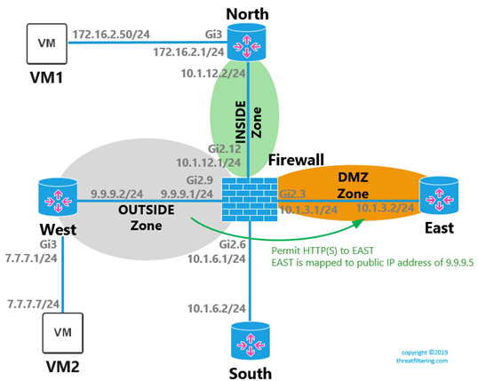

Cisco Zone Based Firewall Step By Step: Part 2
This article is the second part of Cisco Zone Based firewall configuration. The first part provided technology overview, configuration constructs and simple network configuration example.
This part introduces more complex examples including NAT, DMZ, VPNs and operation of Self zone. Examples below are based on the configuration done previously in Part 1. You can also find good reference examples of policy-based and VTI site-to-site IPSec VPN tunnels, as well as NAT and DHCP protocol mechanics.
Note that subnet between Firewall and West router is renumbered with public IP addresses to make NAT examples more readable.
DMZ Zone Configuration
Let’s introduce DMZ zone by moving EAST-facing interface to this zone.
FIREWALL(config)#zone security DMZ
FIREWALL(config-sec-zone)#exit
FIREWALL(config)#int gi2.3
FIREWALL(config-subif)#zone-member security DMZ
FIREWALL(config-subif)#exit
EAST router’s WebUI will be performing functions of Web server.
Previous configuration of the firewall had a single zone-pair statement that allowed Web traffic from INSIDE to OUTSIDE. To allow internal users to access DMZ, let’s add additional zone-pair as per example below.
FIREWALL(config)#policy-map type inspect INSIDE-TO-DMZ
! Pre-existing classes from Part 1
FIREWALL(config-pmap)#class type inspect ICMP
FIREWALL(config-pmap-c)#inspect
FIREWALL(config-pmap-c)#exit
FIREWALL(config-pmap)#class type inspect VM-ALLOWED-TRAFFIC
FIREWALL(config-pmap-c)#inspect
FIREWALL(config-pmap-c)#exit
FIREWALL(config-pmap)#exit
FIREWALL(config)#zone-pair security ZONE-PAIR-INSIDE-TO-DMZ source INSIDE destination DMZ
FIREWALL(config-sec-zone-pair)#service-policy type inspect INSIDE-TO-DMZ
The configuration above re-uses class-maps created in Part 1. Test VM is now able to display login page using real IP of EAST, 10.1.3.2. Now we know that Internal users can access the server without NAT translation, we can expose this server to OUTSIDE zone.
NAT Configuration
OUTSIDE zone represents Internet. Private IP addresses must be translated to externally routable addresses, such as 9.9.9.0/24.
Basic NAT configuration starts with designating interfaces as inside and outside. Packets are being translated only when moving between inside and outside interfaces.
Example below shows this configuration.
! EAST-facing, DMZ interface
FIREWALL(config)#interface gi2.3
FIREWALL(config-subif)#ip nat inside
FIREWALL(config-subif)#exit
! NORTH-facing, Inside interface
FIREWALL(config)#interface gi2.12
FIREWALL(config-subif)#ip nat inside
FIREWALL(config-subif)#exit
! WEST-facing, Outside interface
FIREWALL(config)#interface gi2.9
FIREWALL(config-subif)#ip nat outside
First, we will perform dynamic source address translation with interface’s IP overloading, a.k.a. masquerading, of VM segment 172.16.2.0/24. When any device from this internal subnet is trying to reach Internet it will be seen to external hosts as coming from the firewall’s IP address of 9.9.9.1.
FIREWALL(config)#ip access-list extended DYNAMIC-NAT-FOR-VM-SUBNET
FIREWALL(config-ext-nacl)#permit ip 172.16.2.0 0.0.0.255 any
FIREWALL(config-ext-nacl)#exit
! The following command translates subnet in ACL above into
! FIREWALL’s external interface IP address
FIREWALL(config)#ip nat inside source list DYNAMIC-NAT-FOR-VM-SUBNET interface gi2.9 overload
Then, let’s enable source static, bidirectional NAT in Cisco IOS. Real IP address of the server, 10.1.3.2, will be mapped to public address of 9.9.9.5. Note that no specific route is required on WEST router to enable it to send traffic to IP address of 9.9.9.5 to FIREWALL. This configuration works, as the FIREWALL returns its MAC address for virtual IP of 9.9.9.5 using proxy ARP.
FIREWALL(config)# ip nat inside source static 10.1.3.2 9.9.9.5
Source static NAT in example above is applied bi-directionally and as result destination NAT is being performed when traffic is initiated from the external interface.
Outside-to-DMZ Configuration
Let’s start with traffic classification.
Which IP addresses should be used in ZBF’s ACLs when source is outside NAT interface and destination is inside NAT interface?
Post-NAT or real IP addresses must be used. In the example below, 10.1.3.2 is being used instead of 9.9.9.5. However, access-list applied via access-group to the interface, would use pre-NAT IP address.
This behavior is the result of order of operations, such as application of NAT and inter-security zone policy lookup. Cisco IOS XE configuration reference states that zone-based firewall is implemented as an zone’s egress feature, so you must match the traffic as it egresses the zone.
FIREWALL(config)#ip access-list extended DMZ-SERVER-FROM-OUTSIDE
! Post-NAT addresses are used in the ACL below
FIREWALL(config-ext-nacl)#permit tcp any host 10.1.3.2 eq 80
FIREWALL(config-ext-nacl)#permit tcp any host 10.1.3.2 eq 443
FIREWALL(config-ext-nacl)#exit
FIREWALL(config)#class-map type inspect match-any DMZ-SERVER-ALLOWED-PROTOCOLS
FIREWALL(config-cmap)#match protocol http
FIREWALL(config-cmap)#match protocol https
FIREWALL(config-cmap)#exit
FIREWALL(config)#class-map type inspect match-all DMZ-SERVER-ALLOWED-TRAFFIC
FIREWALL(config-cmap)#match access-group name DMZ-SERVER-FROM-OUTSIDE
FIREWALL(config-cmap)#match class-map DMZ-SERVER-ALLOWED-PROTOCOLS
FIREWALL(config-cmap)#exit
FIREWALL(config)#policy-map type inspect OUTSIDE-TO-DMZ
FIREWALL(config-pmap)#class type inspect DMZ-SERVER-ALLOWED-TRAFFIC
FIREWALL(config-pmap-c)#inspect
FIREWALL(config-pmap-c)#exit
FIREWALL(config-pmap)#exit
FIREWALL(config)#zone-pair security ZONE-PAIR-OUTSIDE-TO-DMZ source OUTSIDE destination DMZ
FIREWALL(config-sec-zone-pair)#service-policy type inspect OUTSIDE-TO-DMZ
Testing from VM2 representing Internet client is successful, as shown in the screenshot below.
The following example shows zone-pair statistics.
FIREWALL#show policy-map type inspect zone-pair ZONE-PAIR-OUTSIDE-TO-DMZ
Zone-pair: ZONE-PAIR-OUTSIDE-TO-DMZ
Service-policy inspect : OUTSIDE-TO-DMZ
Class-map: DMZ-SERVER-ALLOWED-TRAFFIC (match-all)
Match: access-group name DMZ-SERVER-FROM-OUTSIDE
Match: class-map match-any DMZ-SERVER-ALLOWED-PROTOCOLS
Match: protocol http
Match: protocol https
Inspect
Packet inspection statistics [process switch:fast switch]
tcp packets: [0:948]
http packets: [0:835]
Session creations since subsystem startup or last reset 62
Current session counts (estab/half-open/terminating) [0:0:0]
Maxever session counts (estab/half-open/terminating) [4:2:0]
Last session created 00:19:53
Last statistic reset never
Last session creation rate 0
Last half-open session total 0
Class-map: class-default (match-any)
Match: any
Drop (default action)
5 packets, 342 bytes
Policy-based IPSec VPN Configuration
For this example, we will adjust topology, as shown in the diagram below. The tunnel will be established between SOUTH router and the FIREWALL.
IPSec VPN configuration is shown in the example below. See this article describing IPSec terminology with Palo Alto based examples.
! Pre-shared key for authentication with SOUTH router
FIREWALL(config)#crypto isakmp key SECRETKEY address 7.7.7.7
! IKEv1 Phase 1
FIREWALL(config)#crypto isakmp policy 10
FIREWALL(config-isakmp)#authentication pre-share
FIREWALL(config-isakmp)#encryption aes 256
FIREWALL(config-isakmp)#hash sha512
FIREWALL(config-isakmp)#group 5
FIREWALL(config-isakmp)#exit
! ACL specifying interesting traffic
FIREWALL(config)#ip access-list extended VPN-TRAFFIC
FIREWALL(config-ext-nacl)#permit ip 172.16.2.0 0.0.0.255 192.168.100.0 0.0.0.255
! IPSec traffic should be excluded from NAT statement that we created
! earlier for Internet browsing
! By default, ACLs will use sequence 10 for the first entry
! Sequence 5 allows to insert exempt entry before wider permit ACL
FIREWALL(config)#ip access-list extended DYNAMIC-NAT-FOR-VM-SUBNET
FIREWALL(config-ext-nacl)#5 deny ip 172.16.2.0 0.0.0.255 192.168.100.0 0.0.0.255
! This route is used only to determine outbound interface
! SOUTH router doesn’t require this command, as it has default route
! towards FIREWALL
FIREWALL(config)#ip route 192.168.100.0 255.255.255.0 9.9.9.2
! Phase 2 Parameters
FIREWALL(config-ext-nacl)#crypto ipsec transform-set AES256-SHA512 esp-aes 256 esp-sha512-hmac
FIREWALL(config)#crypto map IPSEC 10 ipsec-isakmp
FIREWALL(config-crypto-map)#set peer 7.7.7.7
FIREWALL(config-crypto-map)#set transform-set AES256-SHA512
FIREWALL(config-crypto-map)#match address VPN-TRAFFIC
FIREWALL(config-crypto-map)#exit
FIREWALL(config)#interface gi2.9
FIREWALL(config-subif)#crypto map IPSEC
! Pre-shared key for authentication with FIREWALL
SOUTH(config)#crypto isakmp key SECRETKEY address 9.9.9.1
! IKEv1 Phase 1
SOUTH(config)#crypto isakmp policy 10
SOUTH(config-isakmp)#authentication pre-share
SOUTH(config-isakmp)#encryption aes 256
SOUTH(config-isakmp)#hash sha512
SOUTH(config-isakmp)#group 5
SOUTH(config-isakmp)#exit
! ACL specifying interesting traffic
SOUTH(config)#ip access-list extended VPN-TRAFFIC
SOUTH(config-ext-nacl)#permit ip 192.168.100.0 0.0.0.255 172.16.2.0 0.0.0.255
! Phase 2 Parameters
SOUTH(config)#crypto ipsec transform-set AES256-SHA512 esp-aes 256 esp-sha512-hmac
SOUTH(cfg-crypto-trans)#exit
SOUTH(config)#crypto map IPSEC 10 ipsec-isakmp
SOUTH(config-crypto-map)#set peer 9.9.9.1
SOUTH(config-crypto-map)#set transform-set AES256-SHA512
SOUTH(config-crypto-map)#match address VPN-TRAFFIC
SOUTH(config-crypto-map)#exit
SOUTH(config)#interface gi2.91
SOUTH(config-subif)#crypto map IPSEC
The following examples show how to validate that the tunnel is successfully established:
SOUTH#show crypto isakmp sa
IPv4 Crypto ISAKMP SA
dst src state conn-id status
7.7.7.7 9.9.9.1 QM_IDLE 1003 ACTIVE
SOUTH#show crypto ipsec sa
interface: GigabitEthernet2.91
Crypto map tag: IPSEC, local addr 7.7.7.7
protected vrf: (none)
local ident (addr/mask/prot/port): (192.168.100.0/255.255.255.0/0/0)
remote ident (addr/mask/prot/port): (172.16.2.0/255.255.255.0/0/0)
current_peer 9.9.9.1 port 500
PERMIT, flags={origin_is_acl,}
#pkts encaps: 28, #pkts encrypt: 28, #pkts digest: 28
#pkts decaps: 28, #pkts decrypt: 28, #pkts verify: 28
#pkts compressed: 0, #pkts decompressed: 0
#pkts not compressed: 0, #pkts compr. failed: 0
#pkts not decompressed: 0, #pkts decompress failed: 0
#send errors 0, #recv errors 0
local crypto endpt.: 7.7.7.7, remote crypto endpt.: 9.9.9.1
plaintext mtu 1422, path mtu 1500, ip mtu 1500, ip mtu idb GigabitEthernet2.91
current outbound spi: 0xC05FF866(3227514982)
PFS (Y/N): N, DH group: none
ZBF and Policy-based VPNs
So far, basic policy-based IPSec tunnel was configured.
ZBF configuration of the firewall has effect on transit traffic. Ping from VM1 to VM2 will work as we allowed ICMP from INSIDE to OUTSIDE earlier. However, ping initiated on VM2 to VM1 won’t work, because Firewall considers tunneled traffic as coming from OUTSIDE zone to INSIDE zone, which is not allowed.
Ideally we want tunneled traffic to be classified into a different zone and it is possible to do with GRE or VTI-based tunnels, as will be demonstrated later. However, with policy-based configuration, we will have to use underlying interface’s zone membership. IP addresses in class-maps will be used to differentiate between Internet and remote VPN network.
In the next example we will allow ICMP, HTTP and HTTPS from the remote site. We will use similar construct with parent class map uses combination of ACL and child class map, which in turns matches any of the allowed protocols. Review Part 1 for the more detailed explanation.
FIREWALL(config)#ip access-list extended REMOTE-SITE-FROM-OUTSIDE
FIREWALL(config-ext-nacl)#permit ip 192.168.100.0 0.0.0.255 any
FIREWALL(config-ext-nacl)#exit
FIREWALL(config)#class-map type inspect match-any REMOTE-SITE-ALLOWED-PROTOCOLS
FIREWALL(config-cmap)#match protocol icmp
FIREWALL(config-cmap)#match protocol http
FIREWALL(config-cmap)#match protocol https
FIREWALL(config-cmap)#exit
FIREWALL(config)#class-map type inspect match-all REMOTE-SITE-ALLOWED-TRAFFIC
FIREWALL(config-cmap)#match access-group name REMOTE-SITE-FROM-OUTSIDE
FIREWALL(config-cmap)#match class-map REMOTE-SITE-ALLOWED-PROTOCOLS
FIREWALL(config-cmap)#exit
FIREWALL(config)#policy-map type inspect OUTSIDE-TO-INSIDE
FIREWALL(config-pmap)#class type inspect REMOTE-SITE-ALLOWED-TRAFFIC
FIREWALL(config-pmap-c)#inspect
FIREWALL(config-pmap-c)#exit
FIREWALL(config)#zone-pair security ZONE-PAIR-OUTSIDE-TO-INSIDE source OUTSIDE destination INSIDE
FIREWALL(config-sec-zone-pair)#service-policy type inspect OUTSIDE-TO-INSIDE
Static VTI-based IPSec VPN Configuration
Virtual Tunnel Interface is used to setup route-based VPN on Cisco router. The following set of commands are required to setup the tunnel. Notice that there are no crypto maps and no ACLs defining interesting traffic. Instead IPSec profile with layer-3 Tunnel interface are created. If you are recreating examples in your lab, remove all IPSec-related commands from Policy-based IPSec VPN Configuration section.

! IKEv1 Phase 1
FIREWALL(config)#crypto isakmp key SECRETKEY address 7.7.7.7
FIREWALL(config)#crypto isakmp policy 10
FIREWALL(config-isakmp)#authentication pre-share
FIREWALL(config-isakmp)#encryption aes 256
FIREWALL(config-isakmp)#hash sha512
FIREWALL(config-isakmp)#group 5
FIREWALL(config-isakmp)#exit
! Phase 2 Parameters
FIREWALL(config)#crypto ipsec transform-set AES256-SHA512 esp-aes 256 esp-sha512-hmac
FIREWALL(config)#crypto ipsec profile IPSEC-PROFILE
FIREWALL(ipsec-profile)#set transform-set AES256-SHA512
FIREWALL(ipsec-profile)#exit
! VTI Configuration
FIREWALL(config)#interface Tunnel0
FIREWALL(config-if)#ip address 10.1.11.1 255.255.255.252
FIREWALL(config-if)#tunnel source 9.9.9.1
FIREWALL(config-if)#tunnel destination 7.7.7.7
FIREWALL(config-if)#tunnel mode ipsec ipv4
FIREWALL(config-if)#tunnel protection ipsec profile IPSEC-PROFILE
FIREWALL(config-if)#exit
! Line below shows why this setup is called route-based VPN
! Instead of using ACLs, we create a route over the tunnel interface
FIREWALL(config)#ip route 192.168.100.0 255.255.255.0 10.1.11.2
! IKEv1 Phase 1
SOUTH(config)#crypto isakmp key SECRETKEY address 9.9.9.1
SOUTH(config)#crypto isakmp policy 10
SOUTH(config-isakmp)#authentication pre-share
SOUTH(config-isakmp)#encryption aes 256
SOUTH(config-isakmp)#hash sha512
SOUTH(config-isakmp)#group 5
SOUTH(config-isakmp)#exit
! Phase 2 Parameters
SOUTH(config)#crypto ipsec transform-set AES256-SHA512 esp-aes 256 esp-sha512-hmac
SOUTH(cfg-crypto-trans)#exit
SOUTH(config)#crypto ipsec profile IPSEC-PROFILE
SOUTH(ipsec-profile)#set transform-set AES256-SHA512
SOUTH(ipsec-profile)#exit
! VTI Configuration
SOUTH(ipsec)#interface Tunnel0
SOUTH(config-if)#ip address 10.1.11.2 255.255.255.252
SOUTH(config-if)#tunnel source 7.7.7.7
SOUTH(config-if)#tunnel destination 9.9.9.1
SOUTH(config-if)#tunnel mode ipsec ipv4
SOUTH(config-if)#tunnel protection ipsec profile IPSEC-PROFILE
SOUTH(config-if)#exit
! Route for VPN traffic
SOUTH(config)#ip route 172.16.2.0 255.255.255.0 10.1.11.1
To validate that the VPN is working, let’s try to ping IP address of peer’s tunnel interface and also launch show ipsec sa command:
FIREWALL#ping 10.1.11.2
Type escape sequence to abort.
Sending 5, 100-byte ICMP Echos to 10.1.11.2, timeout is 2 seconds:
!!!!!
Success rate is 100 percent (5/5), round-trip min/avg/max = 1/1/2 ms
FIREWALL#show crypto ipsec sa
interface: Tunnel0
Crypto map tag: Tunnel0-head-0, local addr 9.9.9.1
protected vrf: (none)
local ident (addr/mask/prot/port): (0.0.0.0/0.0.0.0/0/0)
remote ident (addr/mask/prot/port): (0.0.0.0/0.0.0.0/0/0)
current_peer 7.7.7.7 port 500
PERMIT, flags={origin_is_acl,}
#pkts encaps: 5, #pkts encrypt: 5, #pkts digest: 5
#pkts decaps: 23, #pkts decrypt: 23, #pkts verify: 23
#pkts compressed: 0, #pkts decompressed: 0
#pkts not compressed: 0, #pkts compr. failed: 0
#pkts not decompressed: 0, #pkts decompress failed: 0
#send errors 0, #recv errors 0
Note that local and remote identities or Proxy IDs are 0.0.0.0, as opposed to policy-based tunnels where subnets were pre-defined. We also no longer require NAT exemption, as we didn’t use “ip nat outside” on Tunnel interface. Simplicity of the configuration is one of the advantages of using route-based VPNs.
There is still no connectivity between our VMs. You probably already know what the issue is.
ZBF and Static VTI-based VPNs
Tunnel interface can be assigned to a zone. In comparison to policy-based tunnel it doesn’t inherit membership of the underlying physical interface.
The next example demonstrates how to create a new zone named PARTNER with Tunnel0 interface added as member. Then familiar zone-pair configuration is applied.
FIREWALL(config)#zone security PARTNER
FIREWALL(config-sec-zone)#interface Tunnel0
FIREWALL(config-if)#zone-member security PARTNER
FIREWALL(config-if)#exit
! These 2 ACLs are optional, as in our example there is a single partner
! As new VPNs are created an administrator can either use new zones without ACLs
! Or keep using the same partner zone, but control traffic with ACLs
FIREWALL(config)#ip access-list extended TRAFFIC-FROM-PARTNER
FIREWALL(config-ext-nacl)#permit ip 192.168.100.0 0.0.0.255 172.16.2.0 0.0.0.255
FIREWALL(config-ext-nacl)#exit
FIREWALL(config)#ip access-list extended TRAFFIC-TO-PARTNER
FIREWALL(config-ext-nacl)#permit ip 172.16.2.0 0.0.0.255 192.168.100.0 0.0.0.255
FIREWALL(config-ext-nacl)#exit
! Classification is similar to the previous examples
! with nested class-maps
FIREWALL(config)#class-map type inspect match-any PARTNER-ALLOWED-PROTOCOLS
FIREWALL(config-cmap)#match protocol icmp
FIREWALL(config-cmap)#match protocol http
FIREWALL(config-cmap)#match protocol https
FIREWALL(config-cmap)#exit
FIREWALL(config)#class-map type inspect match-all REMOTE-SITE-IN-ALLOWED-TRAFFIC
FIREWALL(config-cmap)#match access-group name TRAFFIC-FROM-PARTNER
FIREWALL(config-cmap)#match class-map PARTNER-ALLOWED-PROTOCOLS
FIREWALL(config-cmap)#exit
FIREWALL(config)#class-map type inspect match-all REMOTE-SITE-OUT-ALLOWED-TRAFFIC
FIREWALL(config-cmap)#match access-group name TRAFFIC-TO-PARTNER
FIREWALL(config-cmap)#match class-map PARTNER-ALLOWED-PROTOCOLS
FIREWALL(config-cmap)#exit
FIREWALL(config)#policy-map type inspect PARTNER-TO-INSIDE
FIREWALL(config-pmap)#class type inspect REMOTE-SITE-IN-ALLOWED-TRAFFIC
FIREWALL(config-pmap-c)#inspect
FIREWALL(config-pmap-c)#exit
FIREWALL(config-pmap)#exit
FIREWALL(config)#policy-map type inspect INSIDE-TO-PARTNER
FIREWALL(config-pmap)#class type inspect REMOTE-SITE-OUT-ALLOWED-TRAFFIC
FIREWALL(config-pmap-c)#inspect
FIREWALL(config-pmap-c)#exit
FIREWALL(config-pmap)#zone-pair security ZONE-PAIR-INSIDE-TO-PARTNER source INSIDE destination PARTNER
FIREWALL(config-sec-zone-pair)#service-policy type inspect INSIDE-TO-PARTNER
FIREWALL(config-sec-zone-pair)#exit
FIREWALL(config)#zone-pair security ZONE-PAIR-PARTNER-TO-INSIDE source PARTNER destination INSIDE
FIREWALL(config-sec-zone-pair)#service-policy type inspect PARTNER-TO-INSIDE
After application of the commands above ping tests are successful.
Self Zone
Self is pre-defined zone for non-transit traffic that is being generated by the router or inbound traffic targeting one of IP addresses of the router. Let’s say we want restrict inbound and inbound connectivity with Internet to ICMP.
The following example demonstrates required configuration:
FIREWALL(config)#class-map type inspect match-all ICMP
FIREWALL(config-cmap)#match protocol icmp
FIREWALL(config-cmap)#exit
FIREWALL(config)#policy-map type inspect OUTSIDE-TO-SELF
FIREWALL(config-pmap)#class type inspect ICMP
FIREWALL(config-pmap-c)#inspect
FIREWALL(config-pmap-c)#exit
FIREWALL(config-pmap)#exit
FIREWALL(config)#policy-map type inspect SELF-TO-OUTSIDE
FIREWALL(config-pmap)#class type inspect ICMP
FIREWALL(config-pmap-c)#inspect
FIREWALL(config-pmap-c)#exit
FIREWALL(config-pmap)#exit
! self is in lower-case
FIREWALL(config)#zone-pair security ZONE-PAIR-OUTSIDE-TO-SELF source OUTSIDE destination self
FIREWALL(config-sec-zone-pair)#service-policy type inspect OUTSIDE-TO-SELF
FIREWALL(config-sec-zone-pair)#exit
FIREWALL(config)#zone-pair security ZONE-PAIR-SELF-TO-OUTSIDE source self destination OUTSIDE
FIREWALL(config-sec-zone-pair)#service-policy type inspect SELF-TO-OUTSIDE
Let’s validate if we can ping FIREWALL to and from WEST router.
! Inbound ping test
WEST#ping 9.9.9.1
Type escape sequence to abort.
Sending 5, 100-byte ICMP Echos to 9.9.9.1, timeout is 2 seconds:
!!!!!
Success rate is 100 percent (5/5), round-trip min/avg/max = 1/1/1 ms
! Validation on the FIREWALL
FIREWALL#show policy-map type inspect zone-pair ZONE-PAIR-OUTSIDE-TO-SELF sessions
Zone-pair: ZONE-PAIR-OUTSIDE-TO-SELF
Service-policy inspect : OUTSIDE-TO-SELF
Class-map: ICMP (match-all)
Match: protocol icmp
Inspect
Established Sessions
! Session is being tracked by ZBF
Session ID 0x00000009 (9.9.9.2:8)=>(9.9.9.1:3) icmp SIS_OPEN
Created 00::00::02, Last heard 00::00::02
Bytes sent (initiator:responder) [360:360]
! Packet drop in the default class
Class-map: class-default (match-any)
Match: any
Drop (default action)
105 packets, 22838 bytes
! Outbound ping test
FIREWALL#ping 9.9.9.2
Type escape sequence to abort.
Sending 5, 100-byte ICMP Echos to 9.9.9.2, timeout is 2 seconds:
!!!!!
Success rate is 100 percent (5/5), round-trip min/avg/max = 1/1/1 ms
! Validation
FIREWALL#show policy-map type inspect zone-pair ZONE-PAIR-SELF-TO-OUTSIDE sessions
Zone-pair: ZONE-PAIR-SELF-TO-OUTSIDE
Service-policy inspect : SELF-TO-OUTSIDE
Class-map: ICMP (match-all)
Match: protocol icmp
Inspect
Established Sessions
Session ID 0x0000000B (9.9.9.1:8)=>(9.9.9.2:2) icmp SIS_OPEN
Created 00::00::01, Last heard 00::00::01
Bytes sent (initiator:responder) [360:360]
Class-map: class-default (match-any)
Match: any
Drop (default action)
0 packets, 0 bytes
As demonstrated in the example above, ping tests are successful and ICMP sessions are being tracked by ZBF. Note, however, that there are dropped packets in OUTSIDE-TO-SELF direction.
Self Zone and VPN
One of the traffic types that is being blocked after implementing the previous example is VPN between FIREWALL and SOUTH router. Pings are now timing out between test VMs.
The encrypted tunnel traffic matches OUTSIDE to SELF zone pair which is currently allows only ICMP. After decryption, it is reclassified as coming from PARTNER zone.
To address the issue with VPN tunnel we will use the following configuration.
FIREWALL(config)#class-map type inspect match-all ISAKMP
FIREWALL(config-cmap)#match protocol isakmp
FIREWALL(config-cmap)#exit
FIREWALL(config)#policy-map type inspect OUTSIDE-TO-SELF
FIREWALL(config-pmap)#class type inspect ISAKMP
FIREWALL(config-pmap-c)#inspect
FIREWALL(config-pmap-c)#exit
FIREWALL(config-pmap)#policy-map type inspect SELF-TO-OUTSIDE
FIREWALL(config-pmap)#class type inspect ISAKMP
FIREWALL(config-pmap-c)#inspect
FIREWALL(config-pmap-c)#end
FIREWALL#show policy-map type inspect zone-pair ZONE-PAIR-OUTSIDE-TO-SELF sessions
Zone-pair: ZONE-PAIR-OUTSIDE-TO-SELF
Service-policy inspect : OUTSIDE-TO-SELF
Class-map: ICMP (match-all)
Match: protocol icmp
Inspect
Class-map: ISAKMP (match-all)
Match: protocol isakmp
Inspect
Established Sessions
! ISAKMP session
Session ID 0x0000000F (7.7.7.7:500)=>(9.9.9.1:500) isakmp SIS_OPEN
Created 00::00::03, Last heard 00::00::02
Bytes sent (initiator:responder) [576:220]
Class-map: class-default (match-any)
Match: any
Drop (default action)
163 packets, 35250 bytes
Applied ISAKMP inspection fixes pings between VMs over VPN. Note that we haven’t specifically allowed or inspected ESP (protocol 50). Depending on software type and version, you might be able to use inspect or not. Example above is based on IOS XE 16.05.01b. One of alternative options is to use ACL in class-map with the following Cisco IPSec protocols allowed:
- ISAKMP – UDP/500
- ESP – IP Protocol 50
- ISAKMP NAT-T – UDP/4500
The next section shows how to use ACLs when protocol inspection is not available.
Self Zone and DHCP
One common scenario is when the provider uses DHCP to allocate IP address to its customers. To demonstrate use of ACLs without protocol matching along with pass command, let’s check the following example. Current IOS-XE version supports inspection of DHCP, matched by keywords bootpc and bootps. It is also possible to use wide protocol inspection, such as UDP and TCP.
This example, however, uses ACL-based classification with pass action for demonstration purposes only.
What is the difference between inspect and pass action keywords in zone based policy maps? Pass allows traffic, however, it doesn’t create a state record and return traffic must be explicitly permitted.
DHCP exchange consists of several messages between client and server, known by abbreviation DORA, or Discover > Offer > Request > Acknowledge. The communication is UDP-based with client using source port 68 and server uses source port 67. As client initially doesn’t have it’s own IP address and doesn’t know IP address of the server, communication originally starts with the source IP of 0.0.0.0 for the client and broadcast as destination. Once IP of the server is known, unicast communication starts.
To simplify the example, only port numbers will be used. Previously, we’ve enabled ICMP and VPN between OUTSIDE and SELF zones.
Let’s start with setting up WEST as DHCP server and enabling FIREWALL’s Internet-facing interface to use dynamic IP address.
WEST(config)#ip dhcp pool 9.9.9.x
WEST(dhcp-config)#network 9.9.9.0 /24
FIREWALL(config)#int gi2.9
FIREWALL(config-subif)#ip address dhcp
Let’s enable DHCP packet debugging on WEST router.
WEST(config)#access-list 100 permit udp any any eq 67
WEST(config)#access-list 100 permit udp any any eq 68
WEST(config)#do debug ip packet 100 detail
At this stage no debug output is generated. FIREWALL’s configuration blocks outbound DHCP discovery packets that router is trying to send. Let’s address this first.
FIREWALL(config-pmap)#ip access-list extended DHCP-REQUESTS
! DHCP server is listening on port 67
! Which is matched with access list entry below
FIREWALL(config-ext-nacl)#permit udp any any eq 67
FIREWALL(config-ext-nacl)#exit
FIREWALL(config)#class-map type inspect match-all DHCP-REQUESTS
FIREWALL(config-cmap)#match access-group name DHCP-REQUESTS
FIREWALL(config-cmap)#exit
FIREWALL(config)#policy-map type inspect SELF-TO-OUTSIDE
FIREWALL(config-pmap)#class type inspect DHCP-REQUESTS
! Note that pass allows traffic matched by class map above
! However, return traffic will need to be allowed explicitly
FIREWALL(config-pmap-c)#pass
FIREWALL(config-pmap-c)#exit
Debug shows that WEST router now receives packets from FIREWALL and sends reply back.
WEST#show debug
IP packet debugging is on (detailed) for access list 100
WEST#
IP: s=0.0.0.0 (GigabitEthernet2.9), d=255.255.255.255, len 335, rcvd 2
UDP src=68, dst=67
IP: s=9.9.9.2 (local), d=255.255.255.255 (GigabitEthernet2.9), len 331, sending broad/multicast
UDP src=67, dst=68
FIREWALL, however, still hasn’t received an IP address.
FIREWALL#show interface gi2.9
GigabitEthernet2.9 is up, line protocol is up
Internet address will be negotiated using DHCP
Let’s now allow inbound return DHCP traffic.
FIREWALL(config)#ip access-list extended DHCP-REPLIES
FIREWALL(config-ext-nacl)#permit udp any any eq 68
FIREWALL(config-ext-nacl)#exit
FIREWALL(config)#class-map type inspect match-all DHCP-REPLIES
FIREWALL(config-cmap)#match access-group name DHCP-REPLIES
FIREWALL(config-cmap)#exit
FIREWALL(config)#policy-map type inspect OUTSIDE-TO-SELF
FIREWALL(config-pmap)#class type inspect DHCP-REPLIES
FIREWALL(config-pmap-c)#pass
On the next DHCP Discovery interval IP address is being successfully allocated.
FIREWALL#show interface gi2.9
%DHCP-6-ADDRESS_ASSIGN: Interface GigabitEthernet2.9 assigned DHCP address 9.9.9.1, mask 255.255.255.0, hostname FIREWALL
GigabitEthernet2.9 is up, line protocol is up
Internet address is 9.9.9.1/24